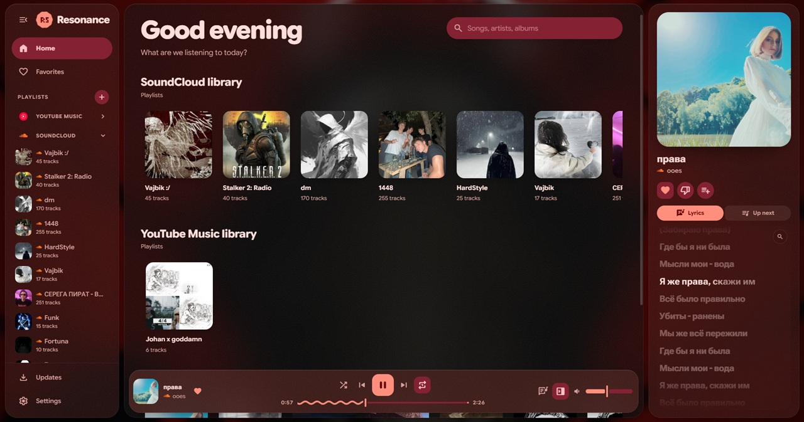
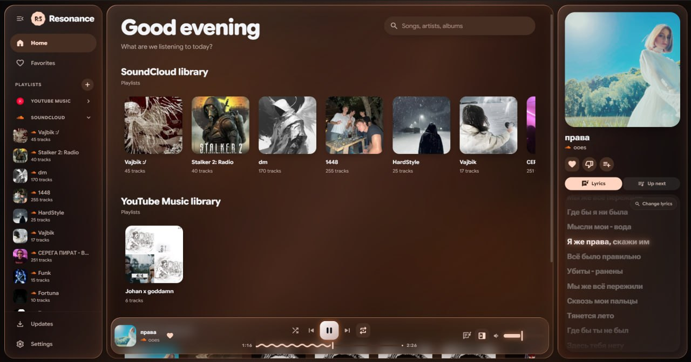
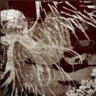
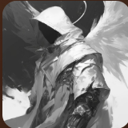
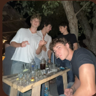
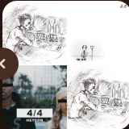
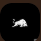

Shape your music band by band
Ten bands, with presets for flat, bass boost, vocal and bright.
Resonance puts your SoundCloud likes and YouTube Music playlists in one native window, with synced lyrics, a 10-band equalizer and crossfade.
Free and open source for Windows, macOS and Linux.

SoundCloud playlists sit above your YouTube Music library. Lyrics follow the track on the right, and the player bar stays at the foot.

Ten bands, with presets for flat, bass boost, vocal and bright.
Set the fade length, or turn crossfade off.
Pick quiet, standard or loud. A limiter stops peaks from clipping.
Resonance checks signed GitHub releases in the background, then restarts into the new build.
About
Resonance is a native desktop player for people who keep their underground tracks on SoundCloud and their main library on YouTube Music, and want both in one window.
Sign in to both services inside the app.
Playlists and likes from both services sit in one tree.




Lyrics and a waveform scrubber follow the track.

BATO · Miura
Next line
Lyrics scroll in time
Free and open source. Installers come from the latest signed GitHub release.
Windows 10 and 11, 64-bit
macOS 13 and later, Apple Silicon and Intel
Wayland and X11, PipeWire and PulseAudio